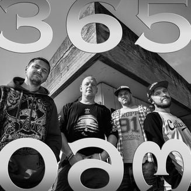

G&G Sindikatas – hiphopo muzikos grupė iš Vilniaus, sukurta 1996-ais metais. 1999-ais išleidus debiutinį albumą „Tavo sielos vagiz“ susiformavo pagrindinė grupės sudėtis: Svaras, Kastetas, Doncavas ir DJ Mamania. Grupė yra išleidusi 8 albumus, laimėjusi Lietuvos hip-hopo muzikos, Bravo, Radiocentro, M.A.M.A. ir kt. apdovonojimus. Intensyviai koncertuoja festivaliuose, klubuose ir arenose visoje Lietuvoje bei už jos ribų.
|  |
Dainos aprašymas. |
|
Dainos aprašymas, šiek tiek ilgesnis. |